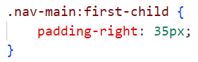

Тема: КАСКАДНІ ТАБЛИЦІ СТИЛІВ. СЕЛЕКТОРИ .ІДЕНТИФІКАТОРИ. СТИЛЬОВЕ ОФОРМЛЕННЯ ТЕКСТОВИХ ЕЛЕМЕНТІВ В HTML-ДОКУМЕНТАХ.
Мета: придбати практичні навички роботи з селекторами, ідентифікаторами, списками, різноманітними властивостями кольору і фону, зовнішними та внутрішними відступами, плаваючими елементами, оформленням текстових елементів
Місце розташування лаби:
1. Посилання репозиторій веб-застосунка
https://github.com/karolinarm08/is_32_cakeshop_rudykh
2. Посилання живу сторінку веб-застосунка
https://karolinarm08.github.io/is_32_cakeshop_rudykh/
3. Посилання на репозиторій звітного html документа
https://github.com/karolinarm08/zvit_is_32_rudykh
4. Посилання на живу сторінку звітного html документа
https://karolinarm08.github.io/zvit_is_32_rudykh/
5. Посилання на репозиторій самостійної роботи
https://github.com/karolinarm08/independent2_is-32_rudykh
6. Посилання на живу сторінку самостійної роботи
https://karolinarm08.github.io/independent2_is-32_rudykh/
Мета: придбати практичні навички роботи з селекторами, ідентифікаторами, списками, різноманітними властивостями кольору і фону, зовнішними та внутрішними відступами, плаваючими елементами, оформленням текстових елементів
Місце розташування лаби:
1. Посилання репозиторій веб-застосунка
https://github.com/karolinarm08/is_32_cakeshop_rudykh
2. Посилання живу сторінку веб-застосунка
https://karolinarm08.github.io/is_32_cakeshop_rudykh/
3. Посилання на репозиторій звітного html документа
https://github.com/karolinarm08/zvit_is_32_rudykh
4. Посилання на живу сторінку звітного html документа
https://karolinarm08.github.io/zvit_is_32_rudykh/
5. Посилання на репозиторій самостійної роботи
https://github.com/karolinarm08/independent2_is-32_rudykh
6. Посилання на живу сторінку самостійної роботи
https://karolinarm08.github.io/independent2_is-32_rudykh/
1
2
3

CSS Стилі для тексту
Шрифти та кольори тексту
Це основний текст
Це додатковий текст
Контури та фон
Текст з контуром і фоном
Таблиця зі стилізацією
| Назва | Опис | Ціна |
|---|---|---|
| Товар 1 | Опис товару 1 | $10 |
| Товар 2 | Опис товару 2 | $20 |
Багаторівневі списки
- Пункт 1
- Підпункт 1.1
- Підпункт 1.2
- Пункт 2
- Пункт 3
- Підпункт 3.1
- Підпункт 3.2
У ході роботи було отримано практичні навички роботи з CSS, зокрема використання селекторів та ідентифікаторів для стилізації елементів. Вивчено оформлення тексту, роботу з кольорами, фоном, відступами, таблицями та списками. Здобуті знання дозволяють ефективно створювати структуровані та візуально привабливі веб-сторінки, а також адаптувати їх для різних пристроїв.